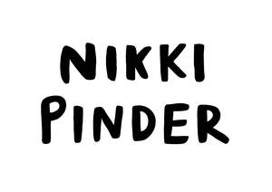

Trade Mark Journal No.2025/026 27 June 2025
UK00004219206 15 June 2025 (9,16,24,25,35,37,40,41,42)

- Class 9
- Downloadable animated cartoons; Animated cartoons; Cartoons (Animated -); Downloadable graphic design templates; Instruments for the reproduction of images; Software for processing images, graphics and text; Downloadable series of children’s books; Instruments for producing photographs; Apparatus for the reproduction of images; Apparatus for reproduction of images; Audio books; Talking books; Downloadable electronic books; Self-adhesive labels [magnetic]; Decorative magnets in the shape of letters; Decorative magnets; Magnets (Decorative -); Self-adhesive labels [encoded]; Printed cards [magnetic].
- Class 16
- Prints; Prints [engravings]; Engravings [prints]; Photographic prints; Canvas prints; Giclee prints; Lithographic prints; Art prints; Photo prints; Pictorial prints; Color prints; Graphic prints; Cartoon prints; Fine art prints; Graphic art prints; Silk screen prints; Prints in the nature of pictures; Graphic prints and representations; Printed art reproductions; Dye-sublimation print paper; Photographs [printed]; Printed photographs; Paper for printing photographs; Print blocks; Paintings [pictures], framed or unframed; Print letters; Reproductions of paintings; Photographic printing paper; Lithographs; Print characters; Printed patterns; Photographic reproductions; Print wheels; Printing papers; Ink sheets for use in reproducing images in the printing industry; Printed transfers for embroidery or fabric appliqués; Printed patterns for costumes; Art etchings; Printing fonts; Laser print paper; Etchings; Printing sets; Watercolor paintings; Printed books; Printed stationery; Graphic art reproductions; Digital printing paper; Printed patterns for dressmaking; Printed paper labels; Watercolors [paintings]; Printed paper signs; Printed sewing patterns; Watercolours [paintings]; Watercolour paintings; Graphic reproductions; Reproductions (Graphic -); Graphic drawings; Drawings; Printed diagrams; Printed stories in illustrated form; Illustrated notepads; Photographs; Illustrated wall maps; Sketch books; Graphic art books; Drawing books; Sketches; Illustration boards; Printed visuals; Colouring pictures; Watercolor pictures; Coloring pictures; Engravings; Colouring books; Engravings and their reproductions; Illustrated wall maps for educational purposes; Coloring books; Chromolithographs; Diagrams; Picture books; Storybooks; Art pictures; Graphic representations; Books featuring fantasy stories; Typographic characters; Books featuring fictional stories; Writing or drawing books; Lithographic engravings; Graphic novels; Comic books; Baby books [storybooks]; Annuals [printed publications]; Manga graphic novels; Lettering guides; Painting books; Manga comic books; Printed cartoon strips; Caricatures; Guide books; Coloring books for adults; Reference books; Paintings and calligraphic works; Pictures; Chromolithographs [chromos]; Printed booklets; Composition books; Story books; Poster books; Drawing templates; Drawing materials; Printed guides; Picture postcards; Printed publications; Publications (Printed -); Drawing materials for blackboards; Covers for books; Postcards and picture postcards; Printed charts; Printed emblems [decalcomanias]; Printed music books; Photograph album pages; Paintings; Wall decals; Watercolours [finished paintings]; Stencils for face painting; Wallpaper stencils; Canvas panels for artists; Canvas for painting; Painting canvas; Painting sets for artists; Saucers (Watercolor [watercolour] -) for artists; Watercolor [watercolour] saucers for artists; Posters; Lettering stencils; Papers for painting and calligraphy; Drawing stencils; Drawing paper; Dressmaking stencils for drawing; Drawing tablets [drawing pads]; Painting pencils; Painting mitts for applying paint; Water colours [finished painting]; Paint brushes; Xuan paper for Chinese painting and calligraphy; Painting sets for children; Charcoal for painters; Artists' paint brushes; Drawing brushes; Arts and craft paint kits; Highlighting pens; Tracing needles for drawing purposes; Highlighting markers; Drawing boards [painters' article]; Angle guides [drawing instruments]; Books; Non-fiction books; Fiction books; Series of non-fiction books; Writing books; Manuscript books; Books for children; Cookery books; Ledgers [books]; Copy books; Music books; Series of fiction books; Educational books; Fantasy books; Autograph books; Hymn books; Wirebound books; Cheque books; Travel books; Ledger books; Gift books; Cook books; Commemorative books; Index books; Information books; Religious books; Prayer books; Covers for cheque books; Check books; Hand books; Guest books; Recipe books; Resource books; Scrap books; Memorandum books; Data books; Flip books; Jackets of paper for books; Coupon books; Exercise books; Sticker books; Dictation books; Account books; School writing books; Song books; Agenda books; Activity books; Birthday books; Children's books; Date books; Note books; Bill books; Baby books; Log books; Rule books; Visitors books; Pop-up books; Covering materials for books; Appointment books; Signature books; Wedding books; Score books; Telephone books; Address books; Music note books; Expense books; Binding materials for books and papers; Pocket books [stationery]; Blank journal books; Novels; Holders for cheque books; Stickers; Bumper stickers; Stickers [stationery]; Adhesive stickers; Stickers [decalcomanias]; Car stickers; Albums for stickers; Decorative stickers for helmets; Decorative stickers for cars; Vehicle bumper stickers; Decals; Sticker albums; Decorative stickers for soles of shoes; Sticker activity books; Cardboard badges; Appliques in the form of decals; Adhesive printed labels; Adhesive notepads; Stencils [stationery]; Adhesive lettering; Self-adhesive tapes for stationery use; Cardboard hangtags; Adhesive-backed vinyl letters and numbers; Placards of cardboard; Adhesive labels of paper; Cardboard labels; Adhesive pads [stationery]; Printed emblems; Placards of paper or cardboard; Adhesive wall decorations of paper; Adhesive labels; Floor decals; Tapes (adhesive -) [stationery]; Paper badges; Labels of paper or cardboard; Paper emblems; Adhesive tape cutters being stationery; Stencils; Printed cardboard invitations; Placards of paper; Self-adhesive plastic sheets for lining shelves; Printed luggage labels; Adhesive foils stationery; Paper hangtags; Glitter glue for stationery purposes; Paper banners; Banners of paper; Stencil plates; Die-cut paper shapes; Commemorative stamps [seals]; Commemorative stamp sheets; Pencil ornaments [stationery]; Pencil ornaments (stationery); Luggage tags of cardboard; Pins [stationery]; Adhesive-backed letters and numbers; Thumbtacks [stationery]; Signboards of paper or cardboard; Glitter pens for stationery purposes; Printed cards; Self-adhesive paper for notes; Labels of paper; Paper labels; Advertising signs of paper or cardboard; Adhesive packaging tapes; Paper name badges; Stamps; Holders for stamps [seals]; Self-adhesive tapes for stationery and household purposes; Self-adhesive tapes for stationery or household purposes; Gummed tape [stationery]; Adhesive tape for stationery purposes; Removable self-stick notes; Paper boxes for storing greeting cards; Bags [envelopes, pouches] of paper or plastics, for packaging; Decorations for pencils; Notepads; Adhesive tapes for stationery purposes; Display banners of paper; Paper luggage labels; Adhesive tape dispensers for household or stationery use; Holders for adhesive tapes; Wrappers [stationery]; Glue pens for stationery purposes; Printed advertising boards of cardboard; Printed flyers; Covers for postage stamps; Seals [stamps]; Paint boxes; Coasters of cardboard; Commemorative postage stamps; Packaging boxes of cardboard; Magazines; Magazines [periodicals]; Periodical magazines; Inflight magazines; Comic magazines; Music magazines; Magazine supplements for newspapers; Travel magazines; Computer magazines; Poster magazines; Professional magazines; Television listing magazines; Periodicals; General feature magazines; Periodical publications; Magazine paper; Magazine covers; Newspapers; Magazines in the fields of games and gaming; Printed periodical publications; Advertising publications; Printed periodicals; Printed periodicals in the field of movies; File boxes for storage of magazines; Magazines featuring video and computer games; Journals; Promotional publications; Newspaper cartoons; Printed periodicals in the field of music; Strategy guide magazines for card games; Strategy guide magazines for video games; Printed publications relating to computers; Printed periodicals in the field of tourism; Bibs, sleeved, of paper.
- Class 24
- Printed fabrics; Silk fabrics for printing patterns; Textiles for digital printing; Silk fabric for printing patterns; Printed textile labels; Mural hangings [textile]; Friezes [textile wall hangings]; Tapestries [wall hangings], of textile; Tapestry [wall hangings], of textile; Wall decorations of textile; Wall plaques of textile; Handcrafted textile wall hangings; Wall hangings; Wall hangings of textile; Wall hangings of silk; Borders (textile wall hangings); Padded coverings [hangings of textile] for existing walls; Friezes of textile; Window curtains; Window furnishing fabrics; Textiles in the form of window furnishings; Textile materials for use as window coverings; Swags [window treatments]; Swags being window treatments; Curtains for windows; Adhesive materials in the form of stickers [textile]; Self-adhesive cloth labels; Iron-on cloth labels; Plastic banners; Pennants [flags], other than of paper; Adhesive tags of textile for bags.
- Class 25
- Printed t-shirts; T-shirts; Tee-shirts; Hats; Beanie hats; Toques [hats]; Bobble hats; Fascinator hats; Cloche hats; Mitres [hats]; Fur hats; Woolly hats; Baseball hats; Fashion hats; Miters [hats]; Bucket hats; Baseball caps and hats; Rain hats; Sun hats; Sports caps and hats; Party hats [clothing]; Top hats; Hats (Paper -) [clothing]; Paper hats [clothing]; Ski hats; Beach hats; Chefs' hats; Ushankas [fur hats]; Small hats; Fake fur hats; Paper hats for use as clothing items; Bonnets [headwear]; Beanies; Paper hats for wear by nurses; Paper hats for wear by chefs; Fedoras; Clothing for horse-riding [other than riding hats]; Caps [headwear]; Caps being headwear; Scarves; Sedge hats (suge-gasa); Visors [headwear]; Visors being headwear; Scarfs; Frames (Hat -) [skeletons]; Hat frames [skeletons]; Headbands [clothing]; Headbands for clothing; Bandanas [neckerchiefs]; Snoods [scarves]; Kerchiefs [clothing]; Visors [hatmaking]; Headgear for wear; Boas [clothing]; Bandannas; Visors [clothing]; Capes (clothing); Gloves [clothing]; Gloves as clothing; Bonnets; Bandanas; Cowls [clothing]; Aprons [clothing]; Head scarves; Headwear; Shawls and headscarves; Headbands; Waistcoats [vests]; Knitted caps; Berets; Caps with visors; Fur coats and jackets; Jackets [clothing]; Headdresses [veils]; Jackets (Stuff -) [clothing]; Stuff jackets [clothing]; Mitts [clothing]; Gloves for apparel; Fingerless gloves as clothing; Hoods [clothing]; Knitted gloves; Headgear; Sweaters; Jerseys [clothing]; Knit jackets; Sun visors [headwear]; Fur jackets; Chaps (clothing); Shirts; Muffs [clothing]; Kerchiefs; Veils [clothing]; Knit shirts; Golf clothing, other than gloves; Cashmere scarves; Fezzes; Shawls; Collars [clothing]; Jumpers [sweaters]; Wristbands [clothing]; Silk scarves; Shoes; Insoles [for shoes and boots]; Insoles for shoes and boots; High-heeled shoes; Wooden shoes [footwear]; Dress shoes; Sneakers [footwear]; Slip-on shoes; Leather shoes; Tongues for shoes and boots; Tennis shoes; Jogging shoes; Ballet shoes; Esparto shoes or sandals; Walking shoes; Rubber shoes; Shoes soles for repair; Hiking shoes; Pullstraps for shoes and boots; Basketball shoes; Esparto shoes or sandles; Athletic shoes; Running shoes; Volleyball shoes; Soccer shoes; Sandals and beach shoes; Sneakers; Shoe soles; Waterproof shoes; Dance shoes; Heel pieces for shoes; Snowboard shoes; Canvas shoes; Wooden shoes; Sports shoes; Platform shoes; Shoes for leisurewear; Shoes for foot volleyball; Foot volleyball shoes; Cycling shoes; Golf shoes; Footwear soles; Soles for footwear; Athletics shoes; Sport shoes; Yoga shoes; Mountaineering shoes; Hockey shoes; Baby shoes; Riding shoes; Roller shoes; Insoles for footwear; Football shoes; Baseball shoes; Gymnastic shoes; Bowling shoes; Rain shoes; Training shoes; Aqua shoes; Boxing shoes; Handball shoes; Fittings of metal for boots and shoes; Skiing shoes; Beach shoes; Flat shoes; Nursing shoes; Shoes for casual wear; Leisure shoes; Shoes for infants; Stiffeners for shoes; Rugby shoes; Heel protectors for shoes; Footwear; Women's shoes; Work shoes; Flip-flops for use as footwear; Tap shoes; Hidden heel shoes; Apres-ski shoes; Deck shoes; Pumps [footwear]; Driving shoes; Infants' shoes; Shoe soles for repair; Sandals; Spiked running shoes; Studs for football shoes; Anglers' shoes; Cleats for attachment to sports shoes; Boots; Trainers [footwear]; Shoe straps; Protective metal members for shoes and boots; Inner socks for footwear; Rubbers [footwear]; Wedge sneakers; Shoe uppers; Basketball sneakers; Short-sleeved T-shirts; Sweatshirts; Turtleneck shirts; Aloha shirts; Yoga shirts; Long-sleeved shirts; Short-sleeve shirts; Short-sleeved shirts; Corduroy shirts; Dress shirts; Maternity shirts; Hoodies; Camouflage shirts; Polo shirts; Soccer shirts; Sweat shirts; Shirts for suits; Woven shirts; Golf shirts; Ramie shirts; Open-necked shirts; Collared shirts; Casual shirts; Sports shirts; Football shirts; Sleep shirts; Button-front aloha shirts; Tennis shirts; Rugby shirts; Pique shirts; Fishing shirts; Shirts and slips; Hunting shirts; Sport shirts; Mock turtleneck shirts; Under shirts; American football shirts; Sports shirts with short sleeves; Night shirts; Tank-tops; Shorts [clothing]; Hooded sweat shirts; Moisture-wicking sports shirts; V-neck sweaters; Sleeveless jerseys; Hooded sweatshirts; Sleeved jackets; Fleece shorts; Bib shorts; Shirt fronts; Shirt yokes; Yokes (Shirt -); Playsuits [clothing]; Denims [clothing]; Padded shirts for athletic use; Jeans; Jerseys; Stuff jackets; Undershirts; Tops [clothing]; Shorts; Polo sweaters; Embroidered clothing; Nappy pants [clothing]; Button down shirts; Bottoms [clothing]; Sleeveless jackets; Sweatpants; Denim jackets; Trousers shorts; Leggings [trousers]; Quilted jackets [clothing]; Bibs, sleeved, not of paper; Cardigans; Turtleneck sweaters; Denim pants; Collars for dresses; Boy shorts [underwear]; Maternity shorts; Blouses; Sleeveless pullovers; Babies' pants [clothing]; Denim jeans; Singlets; Wristbands; Snap crotch shirts for infants and toddlers; Jackets being sports clothing; Undershirts for kimonos (juban); Nightshirts.
- Class 35
- Reproduction of files [paper]; Reproduction of drawings; Retail services for works of art provided by art galleries; Window dressing; Shop window dressings; Shop window dressing; Window dressing and display arrangement services; Shop window display arrangement services; Window display arrangement services; Arranging and conducting trade shows relating to publishing; Promoting and conducting trade shows; Preparation and presentation of audio visual displays for advertising purposes; Promoting the artwork of others by means of providing online portfolios via a website; Fashion shows for promotional purposes (Organization of -); Organization of fashion shows for promotional purposes; Audio-visual displays for advertising purposes (Preparation or presentation of -); Arranging and conducting of commercial exhibitions and shows; Arranging and conducting of displays for advertising purposes; Compilation of statistics relating to advertising; Arranging of displays for advertising purposes; Drawing up of business statistical information; Analysis relating to marketing; Promotional advertising relating to philosophical instruction; Design of advertising logos.
- Class 37
- Painting of buildings; Painting and decorating of buildings; Services for the painting and decorating of buildings; Painting of signs; Painting; Painting of furniture; Decorative painting services; Painting of vehicles; Decorative interior house painting services; Restoration of masonry walls and structures; Decorating of buildings; Signs (Painting or repair of -); Painting or repair of signs; Signs (Painting and repair of -); Construction of walls; Restoration of works of art; Restoration of printed photographs; Restoration of fine artwork; Restoration of buildings; Buildings (Restoration of -); Renovation and restoration of buildings; Renovation of buildings; Buildings (Renovation of -); Construction of partition walls for interiors; Painting and varnishing; Spray painting; House painting; Vehicle painting; Automobile painting; Painting of aircraft; Sign painting; Painting and decorating services; House painting services; Spray painting of metals; Coating [painting] services; Painting restoration services; Painting of window frames; Sign painting services; Painting contractor services; Painting, interior and exterior; Paint work; Painting of motor vehicles; Paint spraying.
- Class 40
- Reproduction of photographic prints; Transfer of photographic prints; Enlarging of photographic prints; Mounting of prints or transparencies; Silkscreen printing; Printing of photos; Printing of photographic transparencies; Photographic etching of fabrics; Photographic printing; Printing (Photographic -); Services for the transfer of photographic prints onto video tapes; Photogravure printing; Letterpress printing; Photographic slide and print processing; Printing of stamps; Printing of digitally stored pictures and photographs; Printing of photographic images from digital media; Printing of patterns on textiles; Printing of photographic film; Film printing (Photographic -); Intaglio printing; Printing of books; Photographic etching of printed matter; Printing of images on objects; T-shirt printing; Portrait printing; Pattern printing on textiles; Lithographic printing; Printing (Lithographic -); Printing; Photographic etching of textiles; Pattern printing; Printing (Pattern -); Pattern printing of carpets; Photographic etching of articles of clothing; Typography; Covering of books; Binding of books or documents; Vinyl wrapping of vehicles; T-shirt embroidering services; Tee-shirt embroidering services; Imprinting messages on tee-shirts.
- Class 41
- Publication of photographs; Publication of text books; Providing online non-downloadable comic books and graphic novels; Creating animated cartoons; Services for the publication of guide books; Publication of booklets; Publication of books; Books (Publication of -); Publication of audio books; Production of animated cartoons; Production of animated motion pictures; Publishing of instructional books; Publication of texts and images, including in electronic form, except for advertising purposes; Publication of educational books; Editing of printed matter containing pictures, other than for advertising purposes; Publication of books, magazines, almanacs and journals; Mural art painting services; Rental of paintings and calligraphic works; Portrait painting; Art exhibitions; Portrait painting services; Face painting; Painting instruction; Demonstration [training] in painting and decorating techniques; Portrait photography; Presentation of variety shows; Organizing and presenting displays of entertainment relating to style and fashion; Showing of films; Showing of cinematographic and motion picture films; Organising of shows for educational purposes; Directing of shows; Movie showing; Horse showing; Magic shows (Presentation of -); Interviewing of contemporary figures for educational purposes; Organisation and presentation of shows; Arranging and conducting of displays for educational purposes; Showing of cinematographic films; Planning of shows; Arranging of displays for educational purposes; Providing online graphic novels, not downloadable; Presentation of ice-skating shows; Organising of shows for entertainment purposes; Drawing instruction; Production of a continuous series of animated adventure shows; Directing of musical shows; Presentation of dancing displays; Publishing of books; Publishing of books, magazines; Publishing of books and reviews; Lending of books and other publications; Loaning of books; Lending of books and periodicals; Publication of music books; Loans of books; Lending of books; Publication of books, reviews; Loan of books; Publishing services for books and magazines; Rental of books; Lending libraries for books; Publishing services for books; Hire of books; Multimedia publishing of books; Services for the publication of books; Online electronic publishing of books and periodicals; Publishing of electronic books and journals online; Publishing of electronic books and journals on-line; Publishing of journals, books and handbooks in the field of medicine; Publication of year books; Electronic online publication of periodicals and books; Online publication of electronic books and journals; Publication of electronic books and journals online; Publication of electronic books and journals on-line; On-line publication of electronic books and journals; Library services for the exchanging of books; Rental of audio books; Lending of books relating to computers; Library services for the lending of books; Book publishing; Publication of electronic books and periodicals on the Internet; Publication of magazines; Magazines (Publication of -); Rental of newspapers and magazines; Multimedia publishing of magazines, journals and newspapers; Publication of consumer magazines; Publication of electronic magazines; Services for the publication of magazines; Publication of newspapers, periodicals, catalogs and brochures; Publishing of web magazines; Rental of magazines; Multimedia publishing of magazines; Magazine publishing; Publication of periodicals; Publication of newspapers; Publishing of newspapers; Publishing of magazines in electronic form on the Internet; Publication of periodicals and books in electronic form; Online publications, namely blogs; Publication of journals; On-line publication of electronic books and journals (non-downloadable); Publishing services for periodical and non-periodical publications, other than publicity texts; Multimedia publishing of newspapers; Publishing of electronic publications; Online publication of electronic newspapers; Publishing of journals; Publication of catalogs; Consultation services relating to the publication of magazines; Publication of brochures; On-line publication of electronic books and journals [not downloadable]; Publication of books relating to television programmes; Issue of publications; Providing on-line non-downloadable general feature magazines; Multimedia publishing of journals; Publishing of medical publications; Multimedia publishing of electronic publications; Newspaper publishing; Publication of catalogues; Newspaper publication; On-line library services, namely, providing electronic library services which feature newspapers, magazines, photographs and pictures via an on-line computer network; Rental of printed publications; Publication of books relating to entertainment; Publication of manuals.
- Class 42
- Graphic illustration design; Graphic illustration services for others; Graphic illustration design services; Illustration services (design); Design of artwork; Illustrating services (design); Design of post card cartoon characters; Graphic art design; Preparation of design parameters for visual images; Design services relating to artwork; Graphic design of promotional materials; Graphic design; Drawing up of engineering drawings; Animation design for others; Information services relating to the combination of colours, paints and furnishings for interior design; Preparation of engineering drawings; Design services relating to window graphics; Preparation of reports relating to graphic arts design; Graphic designing; Design services relating to model making for display purposes; Design services relating to model making for exhibition purposes; Graphic arts designing; Designing (Graphic arts -); Preparation of reports relating to design; Feasibility studies relating to material analysis; Technical drawing; Design, drawing and commissioned writing of computer software; Preparation of reports relating to architecture; Design services relating to model making for play purposes; Authenticating works of art; Works of art (Authenticating -); Design services relating to model making for entertainment purposes; Designing feasibility studies on designs; Research relating to design; Design of logos for t-shirts.
Nikki Pinder